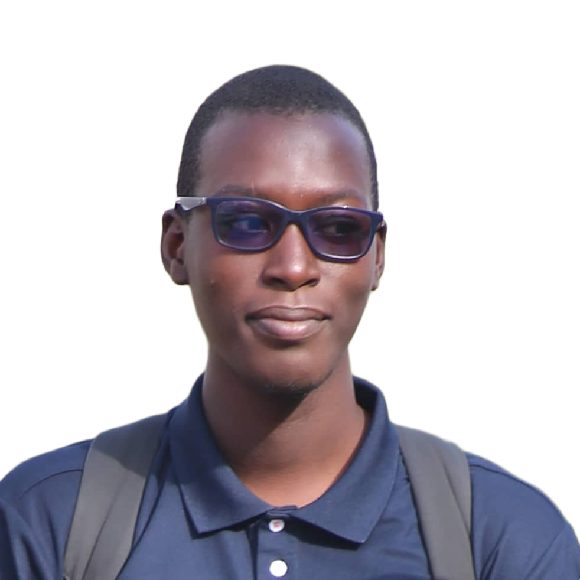

Systèmes & Infra
Linux (administration, scripting Bash), Git

Actuellement en Licence 3 Informatique à l'UCAD (Dakar, Sénégal), je développe un profil polyvalent qui allie développement logiciel et passion pour les systèmes.
Mon parcours m'a fait toucher à de nombreux domaines — développement web, programmation C/C++/Java, bases de données, systèmes d'exploitation — mais c'est l'administration Linux et l'automatisation qui me passionnent le plus au quotidien, au point d'utiliser Linux comme système principal en dehors même de mes études.
Je m'oriente aujourd'hui vers le DevOps et l'ingénierie systèmes/cloud, où je peux combiner mes compétences de développeur avec ma curiosité pour l'infrastructure.
Linux (administration, scripting Bash), Git
Python, JavaScript, PHP, C, C++, Java
Django, React, HTML/CSS
SQL (MySQL, PostgreSQL)
UCAD, Dakar
Mon portfolio personnel.
Application web de gestion de voitures.
Conception d'un serveur Ubuntu personnalisé pour les besoins des instituts de formation supérieure.
Email : papaibrahima8.diop@gmail.com
LinkedIn : Papa Ibrahima Diop
Téléphone : +221 77 594 40 07